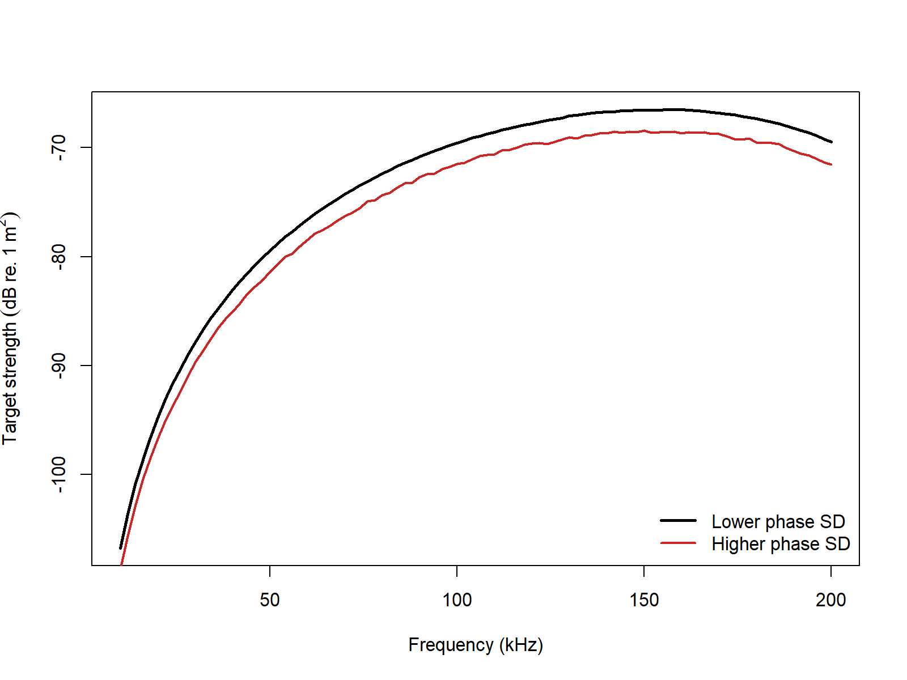

acousticTS implementation
Benchmarked Validated
Model-family pages: Overview Implementation Theory
The acousticTS package uses object-based scatterers so
the same implementation pattern carries across models: create a
scatterer, run target_strength(), inspect the stored model
output, and then compare a small set of physically important inputs. For
SDWBA, the required object class is still FLS, but
target_strength() also receives stochastic controls for
phase variability and resampling.
The important implementation point is that the SDWBA does not replace the underlying DWBA geometry. It uses the same fluid-like target description and then layers a stochastic phase model onto the segment contributions. In practice, that means the object-building step remains deterministic, while the model call is where unresolved variability is introduced.
Fluid-like scatterer object generation
library(acousticTS)
cylinder_shape <- cylinder(
length_body = 15e-3,
radius_body = 2e-3,
n_segments = 50
)
stochastic_scatterer <- fls_generate(
shape = cylinder_shape,
g_body = 1.058,
h_body = 1.058,
theta_body = pi / 2
)
stochastic_scatterer## FLS-object
## Fluid-like scatterer
## ID:UID
## Body dimensions:
## Length:0.015 m(n = 50 cylinders)
## Mean radius:0.002 m
## Max radius:0.002 m
## Shape parameters:
## Defined shape:Cylinder
## L/a ratio:7.5
## Taper order:N/A
## Material properties:
## g: 1.058
## h: 1.058
## Body orientation (relative to transducer face/axis):1.571 radiansCalculating deterministic and stochastic TS
The example below runs both dwba and sdwba
so the stochastic averaging can be compared directly with the baseline
deterministic response.
frequency <- seq(50e3, 200e3, by = 10e3)
stochastic_scatterer <- target_strength(
object = stochastic_scatterer,
frequency = frequency,
model = c("dwba", "sdwba"),
n_iterations = 30,
n_segments_init = 14,
phase_sd_init = sqrt(2) / 2,
length_init = 15e-3,
frequency_init = 120e3
)This paired run is useful because it keeps the target fixed while
changing only the coherence assumption. The DWBA result
shows what the segmented body would predict if every segment phase were
known exactly. The SDWBA result shows what happens when
unresolved phase variability is allowed to soften that deterministic
interference pattern through repeated stochastic realizations.
The stochastic controls should be read together rather than
independently. n_iterations controls how well the ensemble
average is approximated numerically. n_segments_init,
phase_sd_init, length_init, and
frequency_init define the reference scale from which the
segmentation and phase variability are propagated over the actual run
conditions. Those arguments therefore encode the stochastic
interpretation of the target, not just the cost of the calculation.
Extracting model results
Model results can be extracted either visually or directly through
extract().
Accessing results
dwba_results <- extract(stochastic_scatterer, "model")$DWBA
sdwba_results <- extract(stochastic_scatterer, "model")$SDWBA
head(dwba_results)## frequency ka f_bs sigma_bs TS
## 1 5e+04 0.4188790 -0.0001208752-2.197771e-20i 1.461082e-08 -78.35325
## 2 6e+04 0.5026548 -0.0001679661-3.664780e-20i 2.821260e-08 -75.49557
## 3 7e+04 0.5864306 -0.0002190648-5.576294e-20i 4.798939e-08 -73.18855
## 4 8e+04 0.6702064 -0.0002721506-7.917249e-20i 7.406594e-08 -71.30381
## 5 9e+04 0.7539822 -0.0003250775-1.063909e-19i 1.056754e-07 -69.76026
## 6 1e+05 0.8377580 -0.0003756433-1.366000e-19i 1.411079e-07 -68.50449
head(sdwba_results)## frequency f_bs sigma_bs TS TS_sd
## 1 5e+04 -8.440082e-05-5.811999e-06i 7.631414e-09 -81.17395 -88.39526
## 2 6e+04 -1.206802e-04+4.996901e-06i 1.509232e-08 -78.21244 -86.18244
## 3 7e+04 -1.547700e-04+6.557770e-06i 2.528108e-08 -75.97204 -84.06123
## 4 8e+04 -1.993909e-04-9.048857e-06i 4.131196e-08 -73.83924 -82.42271
## 5 9e+04 -2.345411e-04+2.148183e-07i 5.798801e-08 -72.36662 -80.29417
## 6 1e+05 -2.650423e-04+7.759001e-07i 7.417350e-08 -71.29751 -78.95465The SDWBA results include the same main fields as DWBA plus
TS_sd, which summarizes how much the stochastic
realizations vary at each frequency.
That additional field is important for interpretation. A smoothed
mean TS curve by itself does not tell the reader whether
the stochastic realizations were tightly clustered or broadly dispersed.
TS_sd provides that missing context and helps distinguish
between a stable partially incoherent prediction and one that is still
strongly realization-dependent.
Comparison workflows
Phase-disorder sensitivity
One practical way to tune the SDWBA is to compare a smaller and larger phase standard deviation while keeping the geometry fixed.

In practical krill-style applications, phase_sd_init,
length_init, and frequency_init should be
treated as a linked parameterization rather than as independent tuning
knobs.
This comparison is best interpreted as a change in phase disorder
rather than a change in gross target-strength mechanism. The geometry
and material contrasts are the same in both runs. What changes is how
strongly unresolved variability suppresses the coherent cross terms. A
larger phase_sd_init therefore does not mean the target has
become physically larger or more reflective. It means the model is
allowing more stochastic phase scrambling across segment
contributions.
For practical SDWBA work, the first controls to revisit are usually:
-
phase_sd_init, because it sets the reference strength of phase disorder, -
n_iterations, because too few realizations can leave the ensemble average noisy, -
n_segments_init,length_init, andfrequency_init, because together they define the scale-invariant reference for segmentation and phase variability, and - the underlying
FLSgeometry itself, because the stochastic phase model does not compensate for a poorly chosen deterministic target description.
Published reference comparisons
SDWBA should be judged against the exact modal-series
Benchmark column in the Jech weakly scattering sphere,
prolate-spheroid, and cylinder files. The table below reports that
direct comparison together with the representative runtime on the
current machine.
| Geometry | Max abs. delta vs benchmark (dB) | Mean abs. delta vs benchmark (dB) | Elapsed (s) |
|---|---|---|---|
| Weakly scattering sphere | 10.08475 | 0.35609 | 0.72 |
| Weakly scattering prolate spheroid | 2.05918 | 0.07638 | 3.58 |
| Weakly scattering cylinder | 2.07406 | 0.15895 | 1.91 |
These runs use the same stochastic reference values throughout the
benchmark set: N0 = 50,
phase_sd_init = sqrt(2) / 32, L0 = 38.35 mm,
f0 = 120 kHz, and n_iterations = 100.
For SDWBA, the most important additional implementation control is
n_iterations, because it determines how well the stochastic
ensemble average is actually resolved numerically. The table below keeps
the same Jech targets and changes only n_iterations.
| Geometry | n_iterations |
Max abs. delta vs benchmark (dB) | Mean abs. delta vs benchmark (dB) | Elapsed (s) |
|---|---|---|---|---|
| Weakly scattering sphere | 25 | 9.30458 | 0.34871 | 0.58 |
| Weakly scattering sphere | 100 | 10.08475 | 0.35609 | 0.63 |
| Weakly scattering sphere | 500 | 9.97080 | 0.35343 | 1.11 |
| Weakly scattering prolate spheroid | 25 | 1.26004 | 0.06948 | 3.08 |
| Weakly scattering prolate spheroid | 100 | 2.05918 | 0.07638 | 3.63 |
| Weakly scattering prolate spheroid | 500 | 1.28403 | 0.07107 | 6.50 |
| Weakly scattering cylinder | 25 | 2.07406 | 0.15899 | 1.75 |
| Weakly scattering cylinder | 100 | 2.07406 | 0.15895 | 2.03 |
| Weakly scattering cylinder | 500 | 2.07403 | 0.15895 | 3.39 |
That sensitivity table is useful because it shows two things at once.
First, the runtime cost does scale with the number of stochastic
realizations, just as the implementation description says it should.
Second, once the reference stochastic parameters are fixed, simply
driving n_iterations upward does not force SDWBA onto the
exact benchmark family. It mainly stabilizes the ensemble average around
the stochastic approximation itself.
Bundled krill implementation comparison
The bundled krill object serves a different role from
the canonical weakly scattering targets above. Here the goal is not to
compare against an exact modal-series solution, but to compare the same
stored krill geometry across four SDWBA implementations using a common
frequency grid, a common broadside incidence, and the same stochastic
reference values used for the benchmark calculations
(N0 = 50, phase_sd_init = sqrt(2) / 32,
L0 = 38.35 mm, f0 = 120 kHz,
n_iterations = 100).
| Comparison | Mean abs. delta TS (dB) | Max abs. delta TS (dB) |
|---|---|---|
acousticTS vs echoSMs
|
1.70257 | 30.63630 |
acousticTS vs CCAMLR MATLAB |
0.06978 | 0.18270 |
acousticTS vs NOAA HTML |
0.06158 | 0.52846 |
echoSMs vs CCAMLR MATLAB |
1.74808 | 30.72119 |
echoSMs vs NOAA HTML |
1.69189 | 30.27117 |
| CCAMLR MATLAB vs NOAA HTML | 0.13036 | 0.65798 |
Those values should be read as implementation differences rather than
benchmark errors. All four calculations use the same bundled krill
dimensions and the same initial stochastic reference values, but they do
not use the same stochastic convention. In the current external
implementations, both the CCAMLR MATLAB code and the NOAA HTML code
square the phase term in the stochastic multiplier, while
acousticTS keeps the paper-style linear phase standard
deviation and echoSMs follows its own direct
stochastic-phase application. So the bundled krill comparison is
complementary to the canonical tables above: one set checks the
stochastic model against published weakly scattering reference cases,
and the other checks how the same biological krill geometry separates
across existing SDWBA implementations.